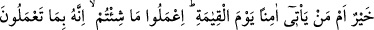
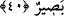

şeytanlardan ve yıkıcı fitnelerden O’na sığınmalıdır.
40. Âyetlerimiz hakkında doğruluktan ayrılıp eğriliğe sapanlar bize gizli kalmaz.
O halde, ateşin içine atılan mı daha iyidir, yoksa kıyâmet günü güvenle gelen mi?
Dilediğinizi yapın! Kuşkusuz O, yaptıklarınızı görmektedir.
“Âyetlerimiz hakkında doğruluktan ayrılıp eğriliğe sapanlar” âyetlerimize yalan,
sihir ve şiir diyenler “bize gizli kalmaz”, onları cezâlandıracağız. “O halde, ateşin
içine atılan mı daha iyidir”, yüz üstü cehenneme atılan kâfirler mi daha hayırlı, “yoksa
kıyâmet günü güvenle gelen mi?” “Dilediğinizi yapın!” İster cehenneme atılmayı
gerektiren, ister kıyâmet günü güvenle gelmeyi gerektiren işlerden dilediğinizi yapın.
“Kuşkusuz O, yaptıklarınızı görmektedir.” Size amellerinize göre karşılık verecektir.
Burada “cehenneme atılmak”la “kıyâmete güvenle gelme” ifâdesi karşılaştırılmıştır.
Bu durum müminlerin kıyâmette bütün tehlikelerden emîn olacaklarının açık ve kesin
olarak ifâde edilmesi demektir. Şâyet cehenneme atılacak olanla cennete girecek
olandan hangisi daha hayırlıdır? denseydi, o zaman belli bir korku döneminden sonra
müminlerin durumunun güvene kavuşacağı gibi bir durum söz konusu olabilirdi.
Âyette ihtibak sanatının olduğu da söylenebilir. Buna göre birinci cümlede ikincisinin
mukâbili, ikinci cümlede ise birincisinin mukâbili hazfedilmiş demektir. Bu durumda
mânâ; korkarak gelip ateşe atılan mı daha hayırlıdır? Yoksa güvenle gelip cennete giren
mi hayırlıdır? demektir. Elbette ikinci durumda olan daha hayırlıdır. Dilediğinizi yapın;
ateşe atılmayı yahut kıyâmete güvenle gelmeyi gerektiren işlerden dilediğinizi yapın,
tercîhinizi yapın, sonuçta ancak kendinize zarar verirsiniz. Bu emir, bir tehdid
ifâdesidir. Bellidir ki bundan maksad, istediklerini yapmaları değildir.
el-Es’iletü’l-Mukhame’de; “Bu emir tehdid mânâsındadır,” denmiştir. Bunun mânâsı
şudur: Mücrimlere mühlet vermek, acziyet yahut gafletten dolayı değildir. Suçlunun
kaçacağından endişe eden hemen onu cezalandırır. Böyle dilediğinizi yapın, şeklinde
mühletli bir ifâde, tehdid unsurlarının en belîğ ve en mânidâr olanıdır.
“O yaptıklarınızı görmektedir”. Binâenaleyh amellerinize göre karşılık verecektir.
Hîle ve tuzağı bırak ki Allah onu bilir,
Sahte para verme ki satıcı onu tanır.
Bu âyet-i kerîme’de özellikle belli bir gruba tehdid vardır. Bunlar, söz ve fiillerinde
ölçüsüz, patavatsız olup felâket tellâllığı yapan, halktan îtibar ve kabûl bekleyip orta
yerde elbiselerini parçalayıp feryâd u figân ederek hezeyanlarda bulunan kimselerdir.
Öyle ki bunlar gûyâ uzlet ve inzivâda bulunurlar, tekke ve zâviyelerde zühd ve takvâ